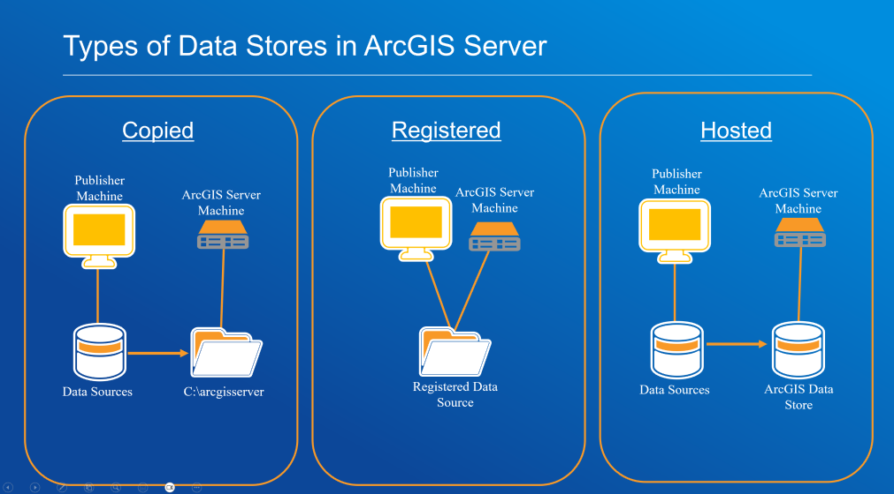

ArcGIS Feature Services: Common Issues, Tips and Effective Solutions You Need to Know
Heads-up: This post may differ from the usual OpSec content as it takes a different route. It’s part of my GeoTech Logbook Series, centered around GIS insights where I explore and document practical GIS challenges and lessons as part of my learning journey.
Table of Contents
Introduction
ArcGIS Feature Services play a critical role in enabling dynamic, editable web maps and applications by serving geographic data over the web. However, managing these services in ArcGIS Enterprise or ArcGIS Online can present challenges especially when errors prevent publishing, accessing, or interacting with features.
This guide aims to break down common issues, provide actionable troubleshooting steps, and highlight some common practices to ensure smooth operation of Feature Services in any GIS environment. I hope this blog provide insights and clarity for your daily operations whether you’re a GIS Administrator, Analyst, or just a regular user.
Understanding ArcGIS Feature Services
ArcGIS Feature Services allow you to publish, query, and edit spatial datasets (features) via web services. In fact, these services are commonly consumed in ArcGIS Online or Portal (for Enterprise environment), ArcGIS Pro, and custom web apps using the ArcGIS API for JavaScript or REST API.
Additionally, Feature Services can be either hosted (stored in ArcGIS Online or Portal) or referenced (pointing to existing enterprise geodatabases) or copied. (More on service types in the upcoming section)
Some common scenarios involving Feature Services include:
- Publishing editable layers from ArcGIS Pro
- Syncing offline field data from mobile apps (e.g., Collector, Field Maps)
- Performing spatial queries from a web dashboard
- Embedding interactive layers in a web map or application
- Enabling real-time data editing and collaboration among multiple users
- Providing data for custom widgets in Experience Builder or WebApp Builder.
- Supporting print and export functions in web mapping applications.
Find more details on feature services HERE
Service-Type Specific Guidance: Hosted vs. Referenced vs. Copied Services
It’s necessary to note that when it comes to dealing with services, ArcGIS Enterprise supports three main types of data stores for services: Copied, Registered (Referenced), and Hosted. Consequently, each type has its own architecture, troubleshooting considerations, and best practices. Below is a structured guide to investigating issues related to each type, with relevant things to take into account.
✍️ Note: Every ArcGIS Enterprise deployment is different, hence troubleshooting steps may not always have the same results. Always investigate issues systematically and tailor solutions to your specific environment or use case.
At first, let’s inspect the below figure and get a better understanding of how data are being handled (registered, fetched and subsequently retrieved) based on each type of Data Store in ArcGIS Server.
Copied Data Stores
As shown in the above figure, when dealing with copied data stores, the data is copied from the publisher’s machine to the ArcGIS Server machine (e.g., to a directory like C:\\arcgisserver). This is typically used when the source data is not accessible to the server directly.
It’s time to dive into more interesting core elements which consist of key considerations as well as a few notable troubleshooting steps. Keep in mind that the troubleshooting steps might vary based on the deployment at hand.
- Data synchronization: Updates to the source data will not be reflected in the published service unless republished.
- Storage management: Large datasets can quickly fill server storage.
- Permissions: Publisher account must have write access to the server directory.
- Check Data Copy Process: Ensure data is actually being copied to the correct server directory. If data is not appearing, do verify permissions and available disk space.
- Validate Data Connections: Sometimes, publishing tools may appear to use the correct connection, but the server might not recognize it as registered, causing unnecessary data copying.
- Analyze Publishing Logs: Review ArcGIS Server logs for errors during the publishing process. The Job IDs might reveal interesting details worth checking as well.
- Check for Duplicate Data: Ensure that multiple copies of the same data are not causing confusion or performance issues.
Registered (Referenced) Data Stores
Just like the name, in this case data remains in its original location (e.g., enterprise geodatabase, shared network folder). Additionally, ArcGIS Server is registered to access the data source directly. Similarly to the Copied Data Store, we will take a look at some aspects to consider as well as a few diagnostic workflow.
Elements to take into account- Data availability: This is crucial as if the data source is offline or inaccessible, services will fail.
- Permissions: Both the publisher and ArcGIS Server account must have read (and possibly write) access.
- Performance: Distinguishing between network/database performance interference and feature service issues can be quiet challenging, making it difficult to pinpoint the root cause.
- Check Data Store Registration: Confirm that the data source is properly registered with ArcGIS Server. Note that incorrect or incomplete registration can cause publishing failures or data copying instead of referencing.
- Validate Connection Settings: Ensure that the connection properties (especially for enterprise geodatabases) are correct and validated.
- Test Data Accessibility: From the ArcGIS Server machine, verify that the data source is accessible (network paths, database credentials, etc.). As a matter of fact, ODBC driver configuration can be taken into consideration in the event of any deployment involving Microsoft SQL Database. Consequently, ensure drivers are up to date and compatible.
- Review Server Logs: Look for errors related to data access, permissions, or network connectivity.
- Analyze Publishing Logs: Review ArcGIS Server logs for errors during the publishing process. The Job IDs might reveal interesting details worth checking as well.
3. Hosted Data Stores
This is one of the most common instance where data is managed by ArcGIS Data Store (relational, tile cache, or spatiotemporal) and supports hosted feature, tile, or scene layers in Portal for ArcGIS. Below are some key points to look out for when dealing with hosted data stores.
Important Factors to Consider- High availability: For critical services, configure highly available ArcGIS Server and Data Store setups. With this being said keep in mind any considerations related to primary site and secondary site administrator.
- Data backup: Ensure regular backups of the ArcGIS Data Store.
- Security: It is essential to properly configure SSL certificates, Web Adaptors, and all other security-related components to ensure a secure ArcGIS Enterprise deployment.
- Check Data Store Health: Use the ArcGIS Server and Portal for ArcGIS admin interfaces to verify the health and status of the ArcGIS Data Store.
- Restart Services in Correct Order: If services are not loading, restart Portal for ArcGIS, ArcGIS Server, and ArcGIS Data Store in the recommended order to avoid service crashes. (Please do it after working hours if on production to avoid service disruptions and system downtime)
- Validate License Status: Ensure the ArcGIS License Manager is running and licenses are current, as expired licenses can cause hosted services to fail.
- Check for recent changes: System restores, version upgrade/downgrade, or server migrations can disrupt connections between Portal, Server, and Data Store.
- Apply relevant patches: For issues after server restarts, check for and apply patches like the ArcGIS Server Hosted Services Restart Patch for instance or any other relevant one.
- Review Logs: Analyze logs for errors related to service publishing, data store connectivity, or authentication.
Check out the below links to learn more about ArcGIS Server & type of data stores:
- Data-And-Publishing-In-ArcGIS-Enterprise
- Data-Source-For-ArcGIS-Server
- Register-Data-Using-ArcGIS-Server-Manager
Error Lookup: Common Feature Service Issues & Relevant Knowledge Articles
Below is a list of frequent errors encountered when working with ArcGIS Feature Services, along with Knowledge Base articles highlighting likely causes, and recommended solutions. I WILL NOT be covering each error in depth, hence I highly recommend you to inspect each one individually for more insights.
- Error 1 → Creating Map Failed
- Knowledge Article: 000031842 — Creating Map Failed
- Error 2 → An Error Occurred Loading This Layer
- Knowledge Article: 000028732 — Error Loading Layer
- Error 3 → Failed to Create the Service
- Knowledge Article: 000016577 — Failed to Create the Service
- Other Relevant Causes & Tips for Troubleshooting
- Database locks: It is advisable to disconnect users or restart services to release locks.
- Max record count exceeded: Not frequent, however configuring services to check results or adjust maxRecordCount should mitigate the issue at hand.
- Firewall or proxy blocking traffic: Networking is a key element when we talk about ArcGIS Enterprise deployment. Hence, confirm port access and SSL configurations. (Bear in mind that end-user should be responsible of investigating any firewall or proxy related issues with their IT Team).
- Sharing Level: This is potentially one of the most fundamental aspect to check as the wrong sharing level (owner instead of organization/public) can lead to inaccessible services or hours of frustration.
- Token expiration: For those of you reading this who are wondering since when do we use token for authentication in ArcGIS Environment, kindly read more on this here. Be aware that, it’s good practice to refresh credentials or configure long-lived tokens for enterprise apps as a possible workaround.
Best Practices for Reliable ArcGIS Feature Services
- Regularly validate your data in ArcGIS Pro using "Check Geometry" and "Repair Geometry" tools before publishing.
- Use consistent spatial references across layers in a map document.
- Follow naming conventions and avoid special characters in service names.
- Monitor service health via ArcGIS Server Manager or Portal logs.
- Enable service capabilities (e.g., sync, query, editing) based on use-case and avoid enabling unnecessary features.
- Limit layer size: Consider tiling or generalizing large datasets before publishing.
- Enable versioning for enterprise geodatabases when editing is needed.
- Test service endpoints using the REST URL before embedding in apps or web maps.
- Use groups and item sharing strategically in Portal or ArcGIS Online (also known as AGOL) to manage access securely.
Conclusion
Troubleshooting ArcGIS Feature Services requires a mix of GIS knowledge, system awareness, and familiarity with Esri tools and architecture. Most common issues stem from misconfigurations, unsupported data, or permission conflicts.
Whether you’re deploying a complex web app or simply publishing a layer for internal/external use, applying best practices and learning from common errors can greatly enhance the reliability and performance of your ArcGIS environment.
⚠️ Copyright & Proprietary Rights Notice
Per Esri’s copyright policy, the information included here is reproduced and shared for educational and non-commercial purposes only, including teaching, research, and scholarship. Any reuse of this content for commercial or distribution purposes beyond personal use must comply with Esri’s licensing terms and include the appropriate copyright notice.
References & Further Reading
- Esri Troubleshooting Feature Services
- ArcGIS REST API Reference
- Feature Service Publishing Options
- Difference between a map service, feature service, and a hosted feature layer
- Unable to Publish New or Start Existing Services (ArcSOC)
- Fail to load map and custom widget
"The application of GIS is limited only by the imagination of those who use it" — Jack Dangermond